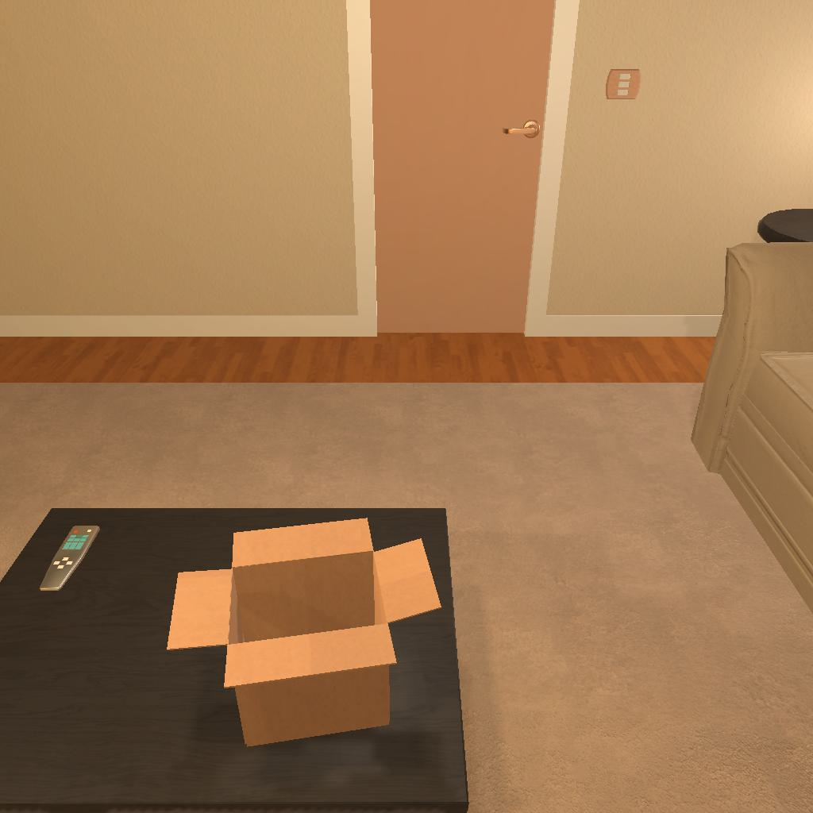

---------------------------------------------------------task: 7---------------------------------------------------------
--------------------------------------------------------------------------------------------------------------------------------------------------------------------
--------------------------------------------------------------------------------------------------------------------------------------------------------------------
Step:--------------------------------------------------------------------------7-------------------------------------------------------------------------------
----------------------------------------
VLM Prompt:
Image1:
Image2:
**Instruction**
1. Analyze the provided images to identify all visible household objects and compare the difference between images (e.h. whether the object is opened or not and taken on hand or not), focusing on those relevant to the task description "put a creditcard in coffeetable."
2. Use the analysis of images and the task hint "The agent must find an object of the desired type, pick it up, find the correct location to place it, and put it down there." to answer the question: what is the most reasonable action in the choices for the task description "put a creditcard in coffeetable"?
3. Decide and write the answer using the template: The answer is: (i): , where i is the real number. If there is no desired object in images, search every place based on **Initial Observation** to find the object. And if no one is exactly correct, choose a similar answer.
**Initial Observation**
You are in the middle of a room. Looking quickly around you, you can see armchair (1-2), dresser (1), garbagecan (1), cabinet (1-4), drawer (1-4), coffeetable (1), sidetable (1), sofa (1)
**Answer Choices**
(1): go to armchair 1
(2): go to armchair 2
(3): go to dresser 1
(4): go to garbagecan 1
(5): go to cabinet 1
(6): go to drawer 1
(7): go to drawer 2
(8): go to cabinet 2
(9): go to drawer 3
(10): go to cabinet 3
(11): go to drawer 4
(12): go to cabinet 4
(13): go to sidetable 1
(14): go to sofa 1
(15): take box 1 from coffeetable 1
(16): take remotecontrol 1 from coffeetable 1
(17): take lightswitch 1 from coffeetable 1
(18): examine coffeetable 1
**Answer**
Let's think step by step by following the instructions.
----------------------------------------
----------------------------------------
Original Response:
Image Analysis:
- In Image 1, we can see a golden statue on a base and some scattered objects on the floor, including a red credit card on the coffeetable.
- In Image 2, we see a coffeetable with a cardboard box and a remote control on top of it. No credit card is visible on the coffeetable in this image.
Task Hint Analysis:
- The agent needs to find the credit card, pick it up, and put it in the coffeetable.
Based on the initial observation, the coffeetable is already mentioned as part of the visible environment. Analyzing the images, the credit card is seen in Image 1 on the coffeetable but not in Image 2, indicating it needs to be picked up and placed there as per the task description.
The answer is: (18): examine coffeetable 1
----------------------------------------
----------------------------------------
>>> Refine Original VLM Response and Get Pure Action: examine coffeetable 1
----------------------------------------
-----------------------------------------------------------------
Running time: 10.278392553329468 seconds
Total Money: 2.738370000000001
-----------------------------------------------------------------
-----------------------------------------------------------------
Text Observation:On the coffeetable 1, you see a box 1, a remotecontrol 1, and a lightswitch 1.
-----------------------------------------------------------------
UNSUCCEED